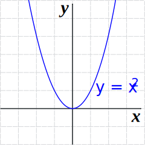
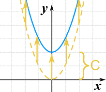
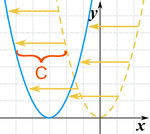
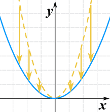
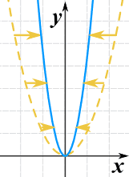
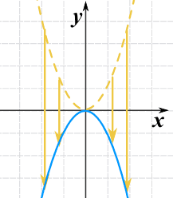
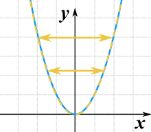
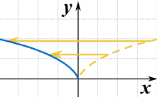

Function Transformations
| Just like Transformations in Geometry, we can move and resize the graphs of functions |
Let us start with a function, in this case it is f(x) = x2, but it could be anything:

f(x) = x2
Here are some simple things we can do to move or scale it on the graph:
We can move it up or down by adding a constant to the y-value:

g(x) = x2 + C
Note: to move the line down, we use a negative value for C.
- C > 0 moves it up
- C < 0 moves it down
We can move it left or right by adding a constant to the x-value:

g(x) = (x+C)2
Adding C moves the function to the left (the negative direction).
Why? Well imagine you will inherit a fortune when your age=25. If you change that to (age+4) = 25 then you will get it when you are 21. Adding 4 made it happen earlier.
- C > 0 moves it left
- C < 0 moves it right
BUT we must add C wherever x appears in the function (we are substituting x+C for x).
Example: the function v(x) = x3 - x2 + 4x
To move C spaces to the left, add C to x wherever x appears:
w(x) = (x + C)3 − (x + C)2 + 4(x + C)
An easy way to remember what happens to the graph when we add a constant:
add to y to go high
add to x to go left
We can stretch or compress it in the y-direction by multiplying the whole function by a constant.

g(x) = 0.35(x2)
- C > 1 stretches it
- 0 < C < 1 compresses it
We can stretch or compress it in the x-direction by multiplying x by a constant.

g(x) = (2x)2
- C > 1 compresses it
- 0 < C < 1 stretches it
Note that (unlike for the y-direction), bigger values cause more compression.
We can flip it upside down by multiplying the whole function by −1:

g(x) = −(x2)
This is also called reflection about the x-axis (the axis where y=0)
We can combine a negative value with a scaling:
Example: multiplying by −2 will flip it upside down AND stretch it in the y-direction.
We can flip it left-right by multiplying the x-value by −1:

g(x) = (−x)2
It really does flip it left and right! But you can't see it, because x2 is symmetrical about the y-axis. So here is another example using √(x):

g(x) = √(−x)
This is also called reflection about the y-axis (the axis where x=0)
Summary
| y = f(x) + C |
|
| y = f(x + C) |
|
| y = Cf(x) |
|
| y = f(Cx) |
|
| y = −f(x) |
|
| y = f(−x) |
|
Examples
Example: the function g(x) = 1/x
Here are some things we can do:
Example: the function v(x) = x3 − 4x
Here are some things we can do:
= 2x3 − 8x
= 27x3 − 12x
All In One ... !
We can do all transformation in one go using this:
a is vertical stretch/compression
- |a| > 1 stretches
- |a| < 1 compresses
- a < 0 flips the graph upside down
b is horizontal stretch/compression
- |b| > 1 compresses
- |b| < 1 stretches
- b < 0 flips the graph left-right
c is horizontal shift
- c < 0 shifts to the right
- c > 0 shifts to the left
d is vertical shift
- d > 0 shifts upward
- d < 0 shifts downward
Example: 2√(x+1)+1
a=2, c=1, d=1
So it takes the square root function, and then
- Stretches it by 2 in the y-direction
- Shifts it left 1, and
- Shifts it up 1